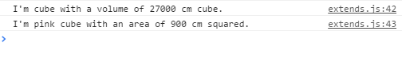

按键F12，控制台将会打印如下内容

派生类 Shape3D 说明：
- Shape3D 继承了 Shape 类, 也继承了 Shape 类的 color 属性。
- 构造函数中，super 方法调用了基类 Shape 的构造函数 Shape，传递了参数 name, width, 和 height 值。 继承允许我们复用 Shape 类的代码，所以我们可以通过继承 area 属性来计算 this.volume。
- Shape3D 的 shoutout() 方法重写基类的实现。superShout() 方法通过使用 super 关键字直接返回了基类的 shoutout() 方法。
class Shape {
area: number;
public color: string;
constructor (public name: string , public width: number, public height: number ) {
this.area = width * height;
this.color = "pink";
}
shoutout() {
return "I'm " + this.color + " " + this.name + " with an area of " + this.area + " cm squared.";
}
}
class Shape3D extends Shape {
volume: number;
constructor ( public name: string,public width: number,public height: number, public length: number ) {
super( name, width, height );
this.volume = length * this.area;
};
shoutout() {
return "I'm " + this.name + " with a volume of " + this.volume + " cm cube.";
}
superShout() {
return super.shoutout();
}
}
var cube = new Shape3D("cube", 30, 30, 30);
console.log( cube.shoutout() );
console.log( cube.superShout() );